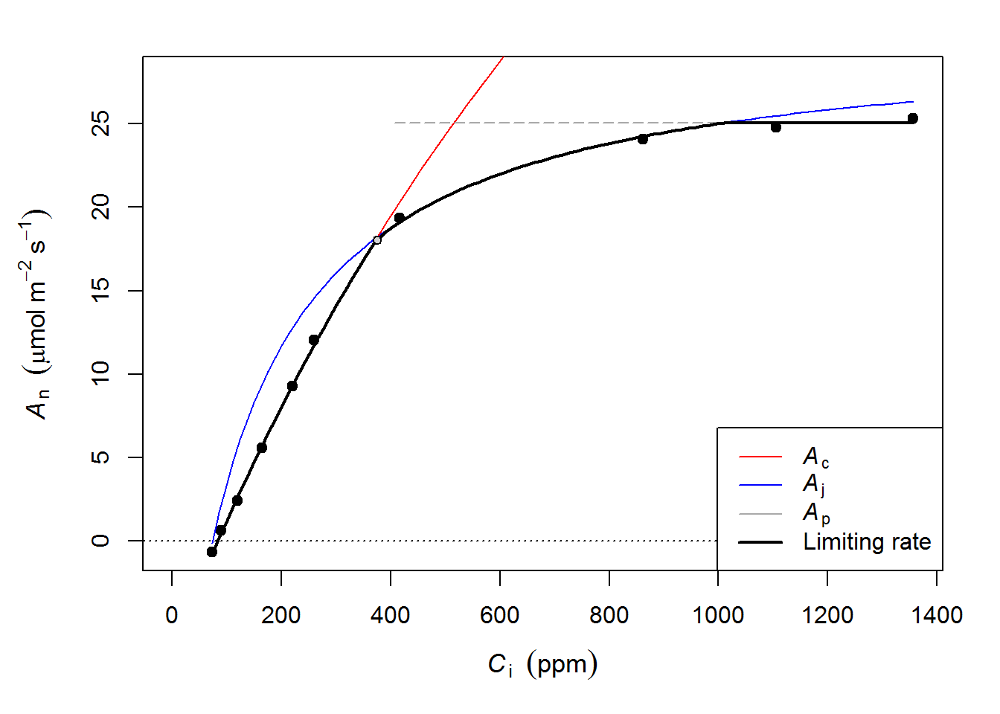

Introduction to fitaci
Remko Duursma
2017-08-10
This vignette explains how to fit A-Ci curves with the plantecophys package in R. It is written to be usable for beginners in R.
After installing the package from CRAN with install.packages("plantecophys"), load the package the usual way:
library(plantecophys)Preparing the data
In the examples below I will use two built-in datasets in the plantecophys package. The acidata1 dataset looks like this:
| Ci | Photo | Tleaf | PARi |
|---|---|---|---|
| 72.81690 | -0.6656991 | 33.36515 | 1800 |
| 89.33801 | 0.6089389 | 33.34065 | 1800 |
| 119.73218 | 2.4030110 | 33.31123 | 1800 |
| 163.84422 | 5.5908708 | 33.29358 | 1800 |
| 219.61709 | 9.2532753 | 33.29326 | 1800 |
| 259.24215 | 12.0213403 | 33.27833 | 1800 |
| 416.48659 | 19.3715508 | 33.32764 | 1800 |
| 861.70294 | 24.0843514 | 33.35583 | 1800 |
| 1105.20222 | 24.7927750 | 33.42005 | 1800 |
| 1356.10582 | 25.3376665 | 33.55434 | 1800 |
The easiest approach is to make your dataset look like that, including those column names. If you want to use different column names, see an example further below.
Read your data into a dataframe in R, possibly using read.csv (comma-separated values):
mydata <- read.csv("myfile.csv")Fitting A-Ci curves
If you have the default column names, fitting an A-Ci curve is as easy as this:
fit <- fitaci(acidata1)The results are stored in the object fit, which can be inspected via:
fit## Result of fitaci.
##
## Data and predictions:
## Ci Ameas Amodel Ac Aj Ap Rd VPD
## 1 72.81690 -0.6656991 -0.7314467 0.6051439 1.233113 1000 1.336532 1.5
## 2 89.33801 0.6089389 0.5060336 1.8427690 3.513935 1000 1.336532 1.5
## 3 119.73218 2.4030110 2.7087378 4.0458398 6.918011 1000 1.336532 1.5
## 4 163.84422 5.5908708 5.7507507 7.0887148 10.595421 1000 1.336532 1.5
## 5 219.61709 9.2532753 9.3634029 10.7035077 13.904585 1000 1.336532 1.5
## 6 259.24215 12.0213403 11.7820611 13.1252964 15.686054 1000 1.336532 1.5
## 7 416.48659 19.3715508 18.8005066 21.7607069 20.162013 3000 1.336532 1.5
## 8 861.70294 24.0843514 23.8113156 39.8882089 25.152138 3000 1.336532 1.5
## 9 1105.20222 24.7927750 25.0045538 47.2964666 26.344397 3000 1.336532 1.5
## 10 1356.10582 25.3376665 25.8021657 53.9109491 27.141449 3000 1.336532 1.5
## Tleaf Cc PPFD Patm Ci_original
## 1 33.36515 72.81616 1800 100 72.81690
## 2 33.34065 89.33852 1800 100 89.33801
## 3 33.31123 119.73489 1800 100 119.73218
## 4 33.29358 163.84998 1800 100 163.84422
## 5 33.29326 219.62646 1800 100 219.61709
## 6 33.27833 259.25394 1800 100 259.24215
## 7 33.32764 416.50541 1800 100 416.48659
## 8 33.35583 861.72678 1800 100 861.70294
## 9 33.42005 1105.22725 1800 100 1105.20222
## 10 33.55434 1356.13165 1800 100 1356.10582
##
## Root mean squared error: 0.9298254
##
## Estimated parameters:
## Estimate Std. Error
## Vcmax 46.846621 1.4748351
## Jmax 105.239159 1.3586481
## Rd 1.336532 0.2413794
## Note: Vcmax, Jmax are at 25C, Rd is at measurement T.
##
## Curve was fit using method: default
##
## Parameter settings:
## Patm = 100
## alpha = 0.24
## theta = 0.85
## EaV = 82620.87
## EdVC = 0
## delsC = 645.1013
## EaJ = 39676.89
## EdVJ = 2e+05
## delsJ = 641.3615
##
## Estimated from Tleaf (shown at mean Tleaf):
## GammaStar = 64.80184
## Km = 1460.068The coefficients can be extracted,
coef(fit)## Vcmax Jmax Rd
## 46.846621 105.239159 1.336532And a standard plot can be made:
plot(fit)
Temperature corrections
The fitaci function corrects the estimates of Vcmax and Jmax to a common temperature (25C) by default, but you may want to change this behaviour if you are interested in actual rates at the temperature measured (not corrected for temperature).
fit2 <- fitaci(acidata1, Tcorrect=FALSE)Note that the correction to a common temperature depends on a number of parameters, the default values in fitaci are not necessarily right for your application!
Using measured dark respiration
The fitaci function also estimates dark respiration (Rd) in the fit, but be aware that those estimates are very imprecise. Also, a higher precision of Vcmax and Jmax can be obtained if you measure Rd independently, and use that value in the fit. To do this, add Rd to the dataframe (default column name is ‘Rd’), and set the useRd=TRUE argument, like so:
acidata2$Rd <- 2
fit3 <- fitaci(acidata2, useRd=TRUE)
coef(fit3)## Vcmax Jmax Rd
## 50.09774 108.26249 2.00000Using different columns
When your column names differ from the defaults, you have to specify all column names. It may also be useful to use a different column in some instance, for example air instead of leaf temperature (perhaps the thermocouple was broken):
fit4 <- fitaci(acidata1, varnames=c(ALEAF="Photo", Tleaf="Tair", Ci="Ci", PPFD="PARi"))Note that the right-hand side of each pair is the name of the variable in your dataframe.
Missing leaf temperature and/or PAR
If leaf temperature is not available in the dataset, a default value of 25C is assumed, or you can pass it as an argument (see below). Likewise, for PAR (which is used to express Jmax at ‘infinite’ light availability), a value of 1800 is assumed.
To use different values, set Tleaf and PPFD (PAR) directly:
fit5 <- fitaci(acidata1, Tleaf=30, PPFD=2000)You can also set GammaStar, Km directly.
Using mesophyll conductance
It is not possible to estimate mesophyll conductance (gmeso) from A-Ci curves (contrary to what some people have claimed in the literature), but it is possible to include gmeso to arrive at chloroplastic rates of Vcmax and Jmax. This is easily done via,
fit6 <- fitaci(acidata1, gmeso=0.2)Note: However note a section in the FAQ Vignette that is included in this package on another approach to account for gmeso.
Fitting TPU limitation
A fairly recent addition to the package (not described in Duursma, 2015) is the estimation of triose phosphate utilization (TPU) limitation. This rate can be estimated like this,
fit7 <- fitaci(acidata1, fitTPU=TRUE)
plot(fit7)
Note: the horizontal line (Ap) is the TPU-limited rate of photosynthesis.
The TPU rate can be extracted via:
coef(fit7)## Vcmax Jmax Rd TPU
## 46.765693 107.485590 1.395788 8.820336Note: In many cases this rate cannot be estimated, i.e. when the limitation is not clearly affecting photosynthesis. In that case the estimated coefficient will be NA.